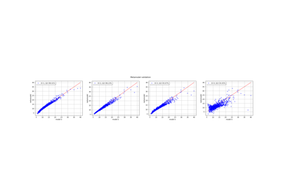

LeastSquaresStrategy¶
- class LeastSquaresStrategy(*args)¶
Least squares strategy for the approximation coefficients.
- Available constructors:
LeastSquaresStrategy(weightedExp)
LeastSquaresStrategy(weightedExp, approxAlgoImpFact)
LeastSquaresStrategy(approxAlgoImpFact)
LeastSquaresStrategy(measure, approxAlgoImpFact)
LeastSquaresStrategy(measure, weightedExp, approxAlgoImpFact)
LeastSquaresStrategy(inputSample, outputSample, approxAlgoImpFact)
LeastSquaresStrategy(inputSample, weights, outputSample, approxAlgoImpFact)
- Parameters:
- weightedExp
WeightedExperiment Experimental design used for the transformed input data. By default the class
MonteCarloExperimentis used.- approxAlgoImpFactApproximationAlgorithmImplementationFactory
The factory that builds the desired
ApproximationAlgorithm. By default the classPenalizedLeastSquaresAlgorithmFactoryis used.- measure
Distribution Distribution
 with respect to which the basis is orthonormal.
By default, the limit measure defined within the class
with respect to which the basis is orthonormal.
By default, the limit measure defined within the class
WeightedExperimentis used.- inputSample, outputSample2-d sequence of float
The input random variables
 and the output samples
and the output samples  that describe the model.
that describe the model.- weightssequence of float
Numerical point that are the weights associated to the input sample points such that the corresponding weighted experiment is a good approximation of
. If not precised, all weights are equals to
 , where
, where  is the size of the
sample.
is the size of the
sample.
- weightedExp
Notes
This class is not usable because it has sense only within the
FunctionalChaosAlgorithm: the least squares strategy evaluates the coefficients of the polynomials
decomposition as follows:
of the polynomials
decomposition as follows:![\vect{a} = \argmin_{\vect{b} \in \Rset^P} E_{\mu} \left[ \left( g \circ T^{-1}
(\vect{U}) - \vect{b}^{\intercal} \vect{\Psi}(\vect{U}) \right)^2 \right]]()
where
 .
.The mean expectation
 is approximated by a relation of type:
is approximated by a relation of type:![E_{\mu} \left[ f(\vect{U}) \right] \approx \sum_{i \in I} \omega_i f(\Xi_i)]()
where is a function
 defined as:
defined as:![f(\vect{U} = \left( g \circ T^{-1} (\vect{U}) - \vect{b}^{\intercal}
\vect{\Psi}(\vect{U}) \right)^2]()
In the approximation of the mean expectation, the set I, the points
 and the weights
and the weights  are
evaluated from methods implemented in the
are
evaluated from methods implemented in the WeightedExperiment.Methods
Accessor to the object's name.
Accessor to the coefficients.
Accessor to the experiments.
getId()Accessor to the object's id.
Accessor to the input sample.
Accessor to the measure.
getName()Accessor to the object's name.
Accessor to the output sample.
Accessor to the relative error.
Accessor to the residual.
Accessor to the object's shadowed id.
Accessor to the object's visibility state.
Accessor to the weights.
hasName()Test if the object is named.
Test if the object has a distinguishable name.
setExperiment(weightedExperiment)Accessor to the design of experiment.
setInputSample(inputSample)Accessor to the input sample.
setMeasure(measure)Accessor to the measure.
setName(name)Accessor to the object's name.
setOutputSample(outputSample)Accessor to the output sample.
setShadowedId(id)Accessor to the object's shadowed id.
setVisibility(visible)Accessor to the object's visibility state.
setWeights(weights)Accessor to the weights.
- __init__(*args)¶
- getClassName()¶
Accessor to the object’s name.
- Returns:
- class_namestr
The object class name (object.__class__.__name__).
- getExperiment()¶
Accessor to the experiments.
- Returns:
- exp
WeightedExperiment Weighted experiment used to evaluate the coefficients.
- exp
- getId()¶
Accessor to the object’s id.
- Returns:
- idint
Internal unique identifier.
- getMeasure()¶
Accessor to the measure.
- Returns:
- muDistribution
Measure
defining the scalar product.
- getName()¶
Accessor to the object’s name.
- Returns:
- namestr
The name of the object.
- getRelativeError()¶
Accessor to the relative error.
- Returns:
- efloat
Relative error.
- getResidual()¶
Accessor to the residual.
- Returns:
- erfloat
Residual error.
- getShadowedId()¶
Accessor to the object’s shadowed id.
- Returns:
- idint
Internal unique identifier.
- getVisibility()¶
Accessor to the object’s visibility state.
- Returns:
- visiblebool
Visibility flag.
- hasName()¶
Test if the object is named.
- Returns:
- hasNamebool
True if the name is not empty.
- hasVisibleName()¶
Test if the object has a distinguishable name.
- Returns:
- hasVisibleNamebool
True if the name is not empty and not the default one.
- setExperiment(weightedExperiment)¶
Accessor to the design of experiment.
- Parameters:
- exp
WeightedExperiment Weighted design of experiment.
- exp
- setMeasure(measure)¶
Accessor to the measure.
- Parameters:
- mDistribution
Measure
defining the scalar product.
- setName(name)¶
Accessor to the object’s name.
- Parameters:
- namestr
The name of the object.
- setShadowedId(id)¶
Accessor to the object’s shadowed id.
- Parameters:
- idint
Internal unique identifier.
- setVisibility(visible)¶
Accessor to the object’s visibility state.
- Parameters:
- visiblebool
Visibility flag.
 .
.Examples using the class¶


Create a polynomial chaos for the Ishigami function: a quick start guide to polynomial chaos


Polynomial chaos is sensitive to the degree


Compute leave-one-out error of a polynomial chaos expansion